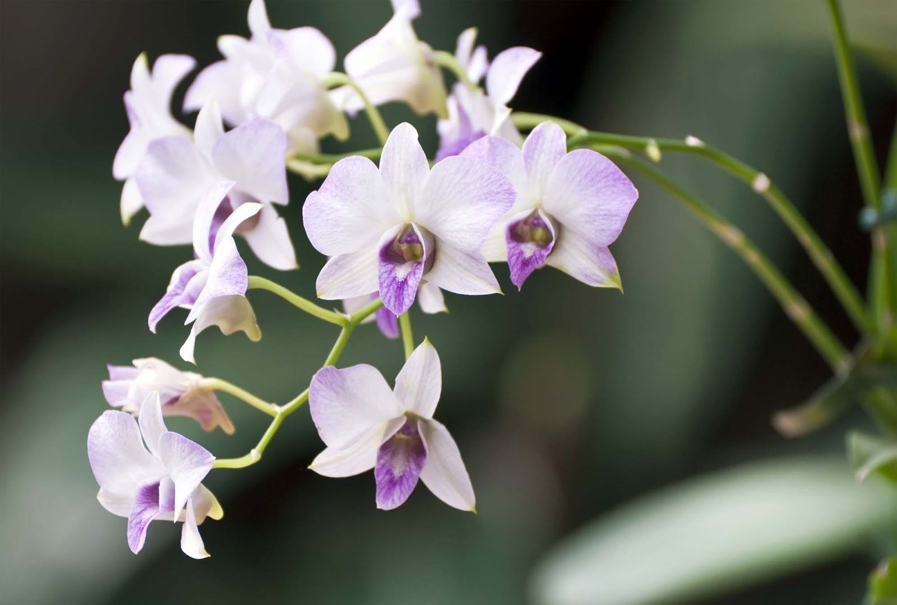
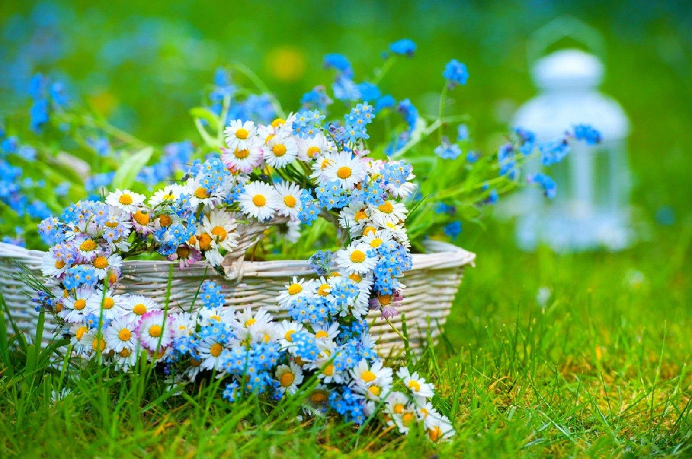
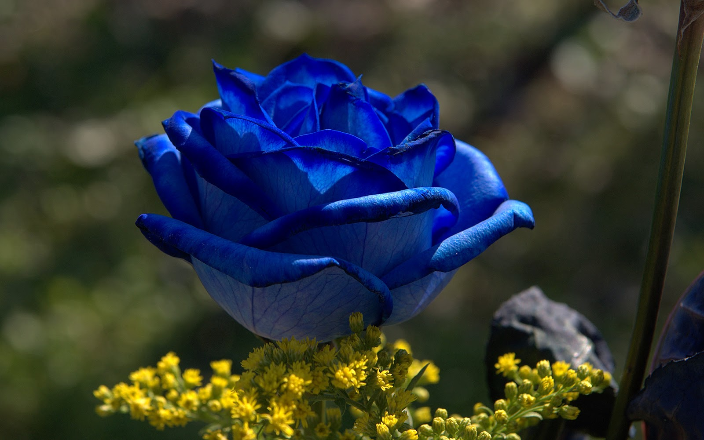
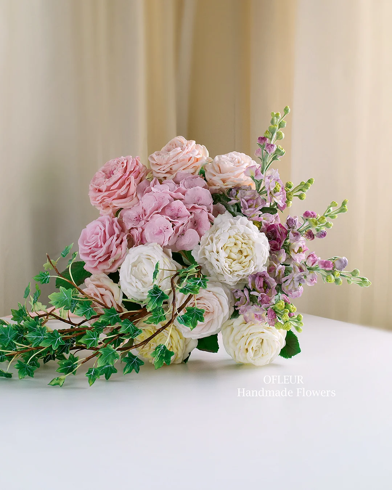
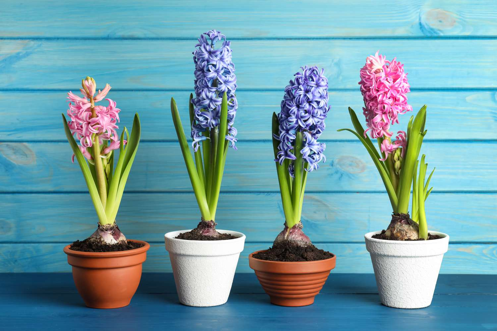
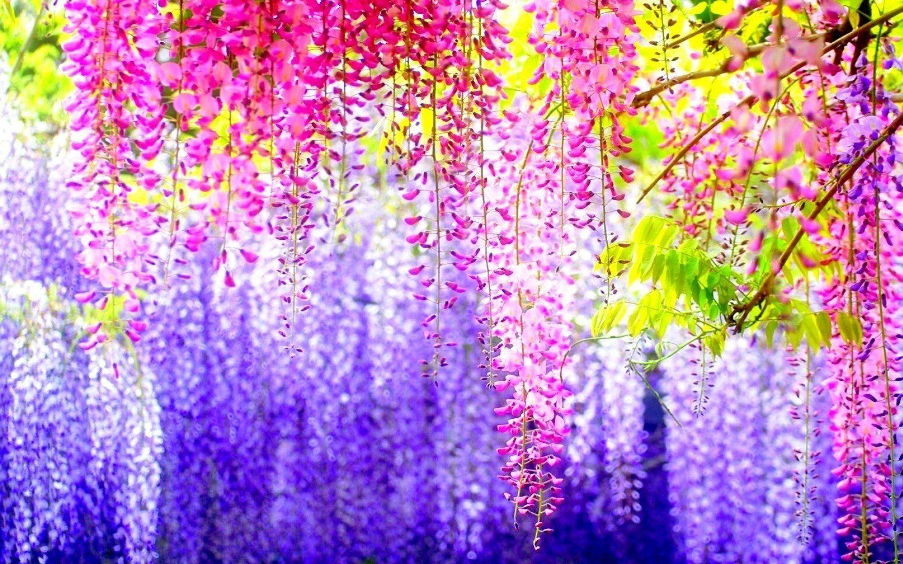

Saveti za cveće
Otkrijte korisne savete za negu i pravilno održavanje vašeg cveća. Saznajte kako da vaši buketi, dvorišno i unutrašnje cveće ostanu sveže duže, uz jednostavne i efikasne tehnike.
Odrzavanje cveća po godišnjim dobima.

Slika cvećara
Održavanje cveća kroz godine zahteva pažnju i prilagodbu različitim sezonskim uslovima. Svako godišnje doba donosi specifične potrebe za negu biljaka. Evo kako se brinuti o cveću tokom četiri godišnja doba:
Proleće:vreme buđenja biljaka. Temperatura raste, a dani postaju duži. Oko ovog perioda cveće treba redovno zalivanje, ali pazite da ne preterujete. Orezivanje je takođe korisno, kako bi se podstakao rast novih izdanaka. Pripazite na štetočine i bolesti koje se mogu pojaviti, pa ih blagovremeno tretirajte.
Leto:cveće je izloženo visokim temperaturama i suši. Zalivanje je ključno, ali je važno izbegavati zalivanje u najtoplijim delovima dana kako bi se sprečilo opekotine na listovima. S obzirom na to da biljke u ovom periodu brže rastu, treba im više prostora i redovno čišćenje od opalog lišća.
Jesen:donosi pad temperature, a dani postaju kraći. Cveće koje je tokom leta bilo izloženo suncu sada je potrebno zaštititi od hladnoće, posebno noću. Mnoge biljke smanjuju rast, pa je potrebno smanjiti zalivanje i prestati sa đubrenjem. Takođe, odsecanje uvelih delova biljaka pomaže u očuvanju zdravlja.
Zima:period mirovanja za mnoge vrste cveća. Biljke koje prezimljuju u zatvorenom prostoru treba smeštati na svetlo i toplo mesto, ali ne previše blizu grejalica. Zalivanje treba biti minimalno, a vlažnost vazduha može se povećati postavljanjem posude s vodom u blizini biljaka. Orezivanje se uglavnom ne vrši, osim ako biljke ne traže hitnu intervenciju.
Višegodišnje i Jednogodišnje Biljke: Karakteristike i Održavanje.

Čuvanje cveća
žive više od dve godine, a često i mnogo duže. One mogu biti drvenaste ili zeljaste, a njihova glavna prednost je što se ne moraju saditi svake godine. Tokom zime, nadzemni deo mnogih višegodišnjih biljaka može odumreti, ali koren ostaje živ i na proleće ponovo izrasta. Održavanje višegodišnjih biljaka uključuje redovno zalivanje, naročito u sušnim periodima, prihranjivanje organskim ili mineralnim đubrivima u proleće i tokom vegetacije, kao i orezivanje osušenih ili oštećenih delova biljke. Takođe, važno je povremeno prorediti gušće zasade kako bi se obezbedio pravilan rast i razvoj. Zimi, neke vrste zahtevaju zaštitu od hladnoće, poput malčiranja korena slojem slame, lišća ili malča.
Jednogodišnje biljke:završavaju svoj životni ciklus u jednoj sezoni – od setve do cvetanja i stvaranja semena. Nakon toga odumiru, pa ih je potrebno svake godine iznova sejati ili saditi. Njihova prednost je što brzo rastu i cvetaju, često donoseći bogate cvetove ili plodove u samo nekoliko meseci. Održavanje jednogodišnjih biljaka podrazumeva redovno zalivanje, jer često imaju plići korenov sistem i ne mogu lako skladištiti vlagu. Takođe, potrebno je uklanjati uvele cvetove kako bi se produžila cvetna sezona i sprečilo preuranjeno formiranje semena. Jednogodišnje biljke često zahtevaju redovnu prihranu kako bi zadržale bujan rast, a ukoliko rastu u saksijama, važno je obratiti pažnju na kvalitet zemljišta i drenažu.

Tajne Uzgoja Orhideja
Otkrijte kako pravilno negovati orhideje kako bi cvetale tokom cele godine uz jednostavne savete.

Najlepše Prolećno Cveće
Proleće donosi eksploziju boja u baštu! Saznajte koje vrste su najbolje za vaš vrt.

Kako Negovati Ruže
Ruže su simbol ljubavi i elegancije - naučite kako ih pravilno orezivati i prihranjivati.

Napravite Savršen Cvetni Aranžman
Kombinovanjem boja i tekstura, stvorite aranžmane koji će osvežiti vaš dom.

Zasadite Lukovice za Jesen
Pripremite se za spektakularan cvat sledećeg proleća sadnjom lukovica na vreme.

Egzotične Biljke za Vaš Vrt
Dodajte egzotične vrste u svoj vrt i stvorite jedinstvenu atmosferu kod kuće.